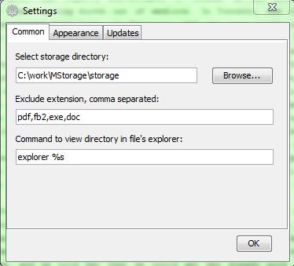

You can looking for text in opened file, use simple word or regular expression (see https://en.wikipedia.org/wiki/Regular_expression):
With the same technologies you can find in directories of MStorage's tree:

If some file have to be the same all the time without any changes, you can prevent his editing by set readonly option in tab menu. After this his tab will be with gray icon:
If you want forbid for tree of storage show some kind of files, you have to point in Settings extensions which you don't want to show:
